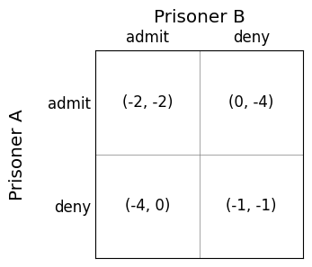
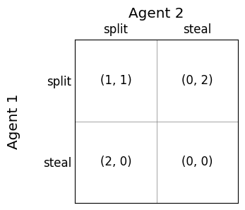
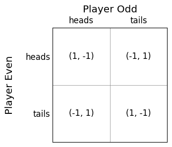
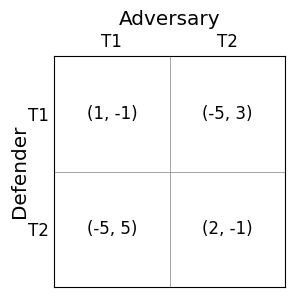

Normal form games#
In the following chapters, we will look at games. By “games”, we do not only mean games like Chess or digital games – the term “game” is a more general term to describe a problem that involves multiple agents or players.
The standard definition of an MDP is for a single agent, who controls all of the actions. In a multi-agent system, we face further challenges: the effects of actions and the rewards we receive are dependent also on the actions of the agents. In fact, the other agents can even be our adversaries, so they may be working to minimise our rewards.
First, we look at normal form games, which are single-shot (non-sequential) games where a group of agents each has to play a move (execute an action) at the same time as all others, but the reward (or payoff that they receive is dependent on the moves of the other agents.
Then, we look at extensive form games, which are sequential games, meaning that there are multiple actions played in sequence.
Learning outcomes
The learning outcomes of this chapter are:
Identify situations in which normal form games are a suitable model of a problem.
Manually calculate the best responses and Nash equilibria for two-player normal form games.
Compare and contrast pure strategies and mixed strategies.
Overview#
Normal form games capture many different applications in the field of multi-agent systems. We will just look at the foundation of these, focusing on both deterministic and stochastic strategies for playing the games. We will cover how to solve these analytically.
Exercise – Prisoner’s dilemma
The best known example of a normal form game is known as the Prisoner’s dilemma, which is as follows.
Consider the following (hopefully fictional) scenario. You and your partner in crime have been arrested for armed robbery. The police would like to avoid a lengthy trial because they have little evidence that you committed the crime, however, both of you were caught carrying illegal weapons, so the police can use this against you.
You and your partner in crime are placed in separate cells, unable to communicate with each other. The police offer you each the following deal:
If neither of you admit your guilt, you will be charged with carrying illegal weapons, and receive 1 year each in prison.
If one of you admits both are guilty, while the other does not, the prisoner that admitted will get off free in exchange for the confession, while the other prisoner will receive 4 years in prison.
If both of you admit you are guilty, you will each receive 2 years in prison — the length is reduced from 4 years in exchange for your confession.
What do you do: admit or deny?
This problem can be represented by the following two-dimensional matrix:

Prisoner A and Prisoner B are the players, admit and deny are the actions, and the values in the cells are the utility or payoffs given to the player. For example, if both players choose to admit, both will receive two years in prison, so the utility is -2 for each player. The left number in each cell is Prisoner A’s utility and the right number in each cell is Prisoner B’s utility.
So, what should each prisoner do? Let’s first list some assumptions about the game, which are general assumptions that we are going to hold throughout this chapter:
We assume that all agents are rational, which means that they aim to maximise their total utility.
We assume that all agents are self-interested, which means that they do not care about the other agents’ utility.
We assume that the game is a perfect information game, which means that rules of the game are common knowledge for all agents; that is, all agents know the rules, including the actions and utilities for all other agents, and all agents know that all agents know the rules, and all agents know that all agents know that all agents know the rules, and all agents know that…. ad infinitum. In short, there is no way to “trick” another agent by taking advantage of something that they don’t know.
Given these assumptions, both agents should choose to admit, with the result being that both receive two years in prison. This may seem surprising: If both agents choose to deny, they would both receive just one year in prison. Why do these choose to spend more time in prison?
The answer all comes down to the self interest: they are not trying to minimise the amount of time that they both spend in prison. Instead, each of them is trying to minimise the amount of time they spend in prison themselves.
Let’s look at this from the perspective of one agent. Your initial intuition may be to think like this: “if I choose to admit, then my opponent could either admit or deny. If they admit, then my utility is -2”, etc. However, perhaps a better way to think is to instead reverse this: “if my opponent admits, what should I do?”
If we reason this way, it is clear to see why both players admit. The game is symmetric, so we only need to reason about one player:
If my opponent admits, then I should admit, which has utility -2, rather than deny, which has utility -4.
If my opponent denies, then I should admit, which has utility 0, rather than deny, which has utility -1.
So, whatever my opponent does, my best action is to admit. Similarly, my opponent can reason in the same way, and their best action is to admit as well. Because both of us reason like this an both of us are self interested, we both end up spending two years in prison instead of one. Interestingly, we cannot use this to out-reason our opponent. If we “know” they will admit, switching to deny is not a good response: we will end up with four years in prison instead of two! This is why it is known as the Prisoner’s dilemma: both prisoners know there is a better outcome for them both, but neither of them has an incentive to deny.
Now that we have seen an example, let’s look at a more formal definition of normal form game.
Definition – Normal form game
A normal form game is a tuple \(G = (N, A, u)\)
\(N\) is a set of \(n\) number of players
\(A = A_1 \times \ldots \times A_n\) is an action profile, where \(A_i\) is the set of actions for player \(i\). Thus, an action profile \(a = (a_1,\ldots,a_n)\) describes the simultaneous moves by all players.
\(u : A \rightarrow \mathbb{R}^N\) is a reward function that returns an \(N\)-tuple specifying the payoff each player receives in state \(S\). This is called the utility for an action.
Normal game games can be visualised as matrices, as shown above for the prisoner’s dilemma, with each agent representing one dimension of the matrix, each row represents an action for a player, and each cell represents the utility received when the players each take the action.
Solutions for normal form games: strategies#
In normal form games, the solution for a player in the game is known as a strategy. There are several types of strategy.
Definition – Pure strategy
A pure strategy for an agent is when the agent selects a single action and plays it. If the agent were to play the game multiple times, they would choose the same action every time.
Definition – Mixed strategy
A mixed strategy is when an agent selects the action to play based on some probability distribution. That is, we choose action \(a\) with probability 0.8 and action \(b\) with probability 0.2. If the agent were to play the game an infinite number of times, it would select \(a\) 80% of the time and \(b\) 20% of the time.
Note that a pure strategy is a special case of a mixed strategy where one of the actions has a probability of 1.
We call the set of strategies for an agent a strategy profile. The strategy profile for agent \(i\) is denoted \(S_i\). Note that \(S_i \neq A_i\) because \(S_i\) contains mixed strategies. The set of mixed-strategy profiles for all agents is simply \(S = S_1 \times \ldots S_n\).
We use the notation \(S_{-i}\) to denote the set of mixed-strategy profiles for all agents except for agent \(i\), and \(s_{-i} \in S_{-i}\) to denote an element of this.
It is not immediately obvious why an agent would want to use randomisation when select an action, but we will see examples where this is important.
Definition – Dominant strategy
Strategy \(s_i\) for player \(i\) weakly dominates strategy \(s'_i\) if the utility received by the agent for playing strategy \(s_i\) is greater than or equal to the utility received by that agent for playing \(s'_i\). Formally, \(s_i\) weakly dominates \(s'_i\) if and only if:
Strategy \(s_i\) strongly dominates strategy \(s'_i\) if its utility is strictly greater. Formally:
A strategy is a weakly (resp. strictly) dominant strategy if it weakly (resp. strictly) dominates all other strategies.
A dominant strategy is strategy-proof: we can even tell our opponents beforehand that this is the strategy that we are going to choose and this would not give them any advantage: it would still be a dominant strategy.
In the Prisoner’s dilemma game, the strategy to admit is strictly dominant: is the best action to take for any of the strategies that an opponent can play.
Best response and Nash equilibria#
First, we look at how to solve games from the perspective of one of the agents, known as the agent’s best response.
Then, we look at solutions at the concept of equilibria, which captures solutions to the entire game.
Informally, the concept of a best response refers to the best strategy that an agent could select if it know how all of the other agents in the game were going to play.
Definition – Best response
The best response for an agent \(i\) if its opponents play strategy profile \(s_{-i} \in S_{-i}\) is a mixed strategy \(s^*_i \in S_i\) such that \(u_(s^*_i, s_{-i}) \geq u_(s'_i, s_{-i})\) for all strategies \(s'_i \in S_i\)
Note that for many problems, there can be multiple best responses.
Using this, we can define the Nash equilibrium of a game, which is named after the famous mathematician John Nash, who proved in his PhD thesis that all finite normal form games have a Nash equilibrium. Informally, as Nash equilibrium is a stable strategy profile for all agents in \(N\) such that no agent has an incentive to change strategy if all other agents kept their strategy the same.
Definition – Nash equilibrium
A strategy profile \(s = (s_1,\ldots, s_n)\) is a Nash equilibrium if for all agents \(i\) and for all strategies \(s_i\) is a best response to the strategy \(s_{-i}\).
If the strategies in a Nash equilibrium are all pure strategies, then we call this a pure-strategy Nash equilibrium. Otherwise, if is a mixed-strategy Nash equilibrium.
This is called an “equilibrium” because it is stable. Effectively, what it means is that each player in the game has no incentive to deviate from this. In fact, if player \(A\) tells player \(B\) what strategy they are going to play, player \(B\) can’t even do anything with that information – the strategy of the equilibrium is still the best strategy. Player \(A\) is happy with their strategy given player \(B\)’s strategy, and player \(B\) is happy with their strategy given player \(A\)’s strategy.
Calculating best response and Nash equilibria#
The set of best responses for a normal form game can be calculated by searching through all strategies to find those with the highest payoff.
Algorithm 16 (Best response)
\( \begin{array}{l} \alginput:\ \text{Normal form game}\ G = (N, A, u)\\ \alginput:\ \text{agent}\ i\\ \alginput:\ \text{and strategy profile}\ s_{-i}\ \text{for agents other than}\ i\\ \algoutput:\ \text{Set of best responses}\\[2mm] best\_response = \emptyset\\ best\_response\_value = -\infty\\ \algforeach\ s_i \in S_i\\ \quad\quad \algif\ u(s_i, s_{-i}) > best\_response\_value\ \algthen\\ \quad\quad\quad\quad best\_response = \{s_i\}\\ \quad\quad \algelsif\ u(s_i, s_{-i}) = best\_response\_value\ \algthen\\ \quad\quad\quad\quad best\_response = best\_response \cup \{s_i\}\\ \algreturn\ best\_response \end{array} \)
This has complexity \(O(|S_i|)\): we check each strategy once.
As an example, consider the Prisoner’s dilemma. Clearly, the best response for both agents is the unique strategy to admit.
Finding Nash equilibria involves searching through all strategy profiles and finding those in which all agents strategies are a best response in that profile. Here is an algorithm for finding the Nash equilibria for a two-player normal form game:
Algorithm 17 (Nash equilibria)
\( \begin{array}{l} \alginput:\ \text{Normal form game}\ G = (N, A, u)\\ \algoutput:\ \text{Set of Nash equilibria}\\[2mm] nash\_equilibria = \emptyset\\ \algforeach\ s_1 \in A_1\\ \quad\quad \algforeach\ s_2 \in A_2\\ \quad\quad\quad\quad \algif \ s_i \in BestResponse(i, s_j)\ \algand\ s_j \in BestResponse(j, s_i)\ \algthen\\ \quad\quad\quad\quad\quad\quad nash\_equilibria = nash\_equilibria \cup \{(s_i, s_j)\}\\ \algreturn\ nash\_equilibria \end{array} \)
Informally, given a normal form game, we can look at each cell \((s_1, s_2)\) of the game, and search along the rows and columns to determine whether any player can do better by changing their strategy (while all other agents’ strategies state the same).
To search for pure strategy equilibria, we just set \(S_i \leftarrow A_i\); that is, we search only over pure strategies.
Example – Nash equilibria for Prisoner’s dilemma
Prisoner’s dilemma has a unique pure-strategy Nash equilibrium: \((admit, admit)\). In fact, for any game in which all agents have a dominant strategy, that will form a unique Nash equilibrium.
We can verify this by looking at each cell and reasoning as follows:
At \((admit, admit)\) the utility is \((-2, -2)\). If either agent switches to \(deny\), then that agent will receive \(-4\), so they have no reason to deviate from \(admit\). Therefore, this is a Nash equilibrium.
At \((deny, deny)\) the utility is \((-1, -1)\). If either agent switches to \(admit\), their utility will increase to \(0\), so they have an incentive to deviate. Therefore, this is NOT a Nash equilibrium.
For \((admin, deny)\) or \((deny,admit)\), the agent that denies has an incentive to admit to increase its utility from \(-1\) to \(0\), therefore, neither is a Nash equilibrium.
Example – Nash equilibria for Split or steal
Split or steal is a game in which two agents need to decide whether to split a pot of prize money, or try to steal it from the other. If they share, both receive half of the prize money. If one steals and one shares, the player who steals receives all of the prize and the other agent receives nothing. If they both steal, both receive nothing. The game matrix for this can be described as follows:

What are the Nash equilibria. There are in fact three Nash equilibria for this game, highlighted using the square brackets above! Let’s reason about them:
\((steal, steal)\) is a Nash equilibrium for both agents, because if either agent deviates by playing \(split\), their utility remains at 0.
\((steal, split)\) and \((split, steal)\) are both equilibria because if either agent deviates from \(steal\) their utility decreases from 2 to 1, while if either deviates from \(split\) their utility remains at 0
\((split,split)\) is not a Nash equilibrium because both agents have incentive to deviate to \(steal\), which would increase their utility from 1 to 2.
Mixed strategies#
Recall from earlier in this chapter where we defined mixed strategies, which are strategies that use randomisation. To illustrate why these are necessary, consider the following simple game.
Example – Matching Pennies
In the Matching Pennies game, two players each have a penny, and simultaneously they need to show either a \(head\) or a \(tail\) of their penny to their opponent. The \(Odd\) player will win if there is just one head, and the \(Even\) player will win if there are two heads. We can model this as follows:

It is clear that neither agent has a dominant strategy and there are no pure-strategy equilibria: in every call, there is an incentive for the agent receiving -1 to deviate from their strategy.
So, what strategy should we play? If we were to play this game a number of times, clearly picking either \(heads\) or \(tails\) every time would be a bad strategy: our opponent would learn this and would start picking their strategy to beat us. Instead, we need to randomise by choosing \(heads\) sometimes and \(tails\) sometimes. Intuitively, we would choose each with probability 0.5; but can we calculate this analytically?
To do this, we need to define the concepts of expected utility and indifference.
Definition – Expected utility of a pure strategy
Expected utility is the weighted average received by an playing a particular pure strategy. For an action \(a_i \in A_i\), the expected utility of that action is:
where \(a^1_{-i}, \ldots, a^m_{-i}\) are the action profiles for all agents other than \(i\), and \(p_1, \ldots, p_m\) are the probabilities of our opponents playing those action profiles.
In theory, we can maximise our overall utility by picking the pure strategy with the highest expected utility. However, in a game, we do not know the probabilities that our opponents will play those moves! This is where indifference comes in.
Definition – Indifference
An agent \(i\) is indifferent between a set of pure strategies \(I \subseteq A_i\) if for all \(a_i, a_j \in I\), we have that \(U_i(a_i) = U_i(a_j)\).
Informally, this states that an agent is indifferent between a set of pure strategies if the expected return of all strategies is the same. The agent is therefore indifferent between these pure strategies because it does not matter which action they choose.
Definition – Mixed-strategy Nash equilibria
A mixed-strategy Nash equilibria is a mixed-strategy profile \(S\) such that the strategy for each agent \(i \in N\) is a tuple of probabilities \(P_i = (p_1, \ldots, p_m)\), one for each pure strategy, such that \(p_1 + \ldots + p_m = 1\) and that all opponents \(j\) are indifferent to their pure strategies \(A_j\)..
Informally, this states that each agent should choose a mixed strategy such that it makes their opponents indifferent to their own actions. Intuitively, this does not really make much sense: each agents’ strategy is to make its opponents indifferent to their own strategy. However, if we analyse it from the perspective of the opponent, it becomes clear: if we select the probabilities for a mixed strategy such that our opponent is not indifferent, then this means there is at least one strategy that has a higher expected utility than all others. In that case, the opponent would play that strategy.
Example – Mixed strategies for matching pennies
For the matching pennies game, as agent \(Odd\), we want to set the probabilities of \(heads\) and \(tails\) such that \(U_{Even}(heads) = U_{Even}(tails)\).
Let \(Y\) and \(1-Y\) be the probabilities that agent \(Odd\) plays \(heads\) and \(tails\) respectively. We need to solve to \(Y\) to make \(Even\) indifferent to playing \(heads\) or \(tails\):
Therefore, \(Odd\) should play \(heads\) and \(tails\) with probability \(\frac{1}{2}\) each. If we solve for player \(Even\), we would find the same answer.
In this example, the probabilities of the game are reasonably clear without having to solve. Now, let’s look at a more complicated game, which is an example of a security game.
Example – Mixed strategies for the security game
A security game is a model of how to place resources to improve safety and security of key assets. In this example, we look at the issue of where to place resources each hour to defend from an attack at an airport that has two terminals. It is infeasible to always patrol all terminals, but with a randomised strategy, we can make it difficult for an adversary to know which terminal to target.
The difficulty is that the two terminals have different “values” for both the defender and the adversary. Both value terminal 1 more highly (e.g. it is a terminal that has more people on a typical day), but both also value the terminals different to each other. This can be modelled with the following normal form game:

It is clear that having a uniform strategy is not the best strategy, but we can use indifference to determine what is.
If \(Y\) is the probability that the adversary will attack Terminal 1, then the expected utility of the defender’s two pure strategies are:
\(\quad\quad U_D(T1) = 5Y + -1(1 - Y) = 6Y - 1\)
\(\quad\quad U_D(T2) = -5Y + 2(1 - Y) = 2 - 7Y\)
If the adversary wants to make the defender indifferent between its two pure strategies, then the utility for the defender’s two pure strategies must be the same.
So, the adversary should target Terminal 1 with probability \(\frac{3}{13}\) and Terminal 2 with probability \(\frac{10}{13}\).
If \(X\) is the probability that the defender will defend Terminal 1, then the expected utility of the adversary’s two pure strategies are:
\(\quad\quad U_A(T1) = -3X + 5(1-X) = 5 - 8X\)
\(\quad\quad U_A(T2) = 1X + -1(1-X) = 2X - 1\)
If the defender wants to make the adversary indifferent between its two pure strategies, then the utility for the adversary’s two pure strategies must be the same:
So, the defender should choose to defend Terminal 1 with the probability \(\frac{3}{5}\) and Terminal 2 with \(\frac{2}{5}\).
Takeaways#
Takeaways
Normal form games model non-sequential games where agents take actions simultaneously.
Pure strategies and mixed strategies can be used by agents. We analyse which strategies are good and also how these relate to Nash equilibria.